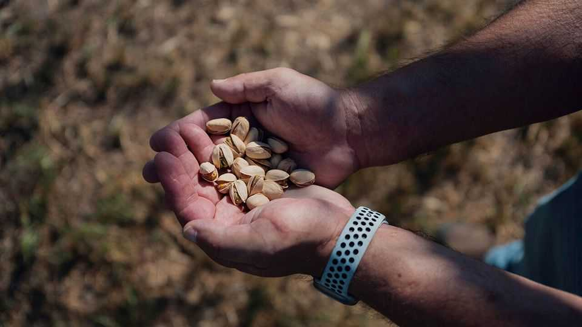

Looking for a winner from the Iran war?
California’s pistachio farmers have gained, for now
June 25th 2026

JOE COELHO’S family has been farming near Riverdale, in California’s San Joaquin Valley, for four generations. “I’m the fifth of my name, like Game of Thrones,” he says. His family ran a dairy for decades, but in 2021 they sold the cows and planted pistachio trees. The crops thrive in the valley’s dry heat, and the switch to pistachios has paid off. In May the nuts fetched $5.30 a pound in America, according to Expana, a market-data provider, the highest price in a decade, inflated by the war in Iran.
As peace talks between America and Iran continue, the White House is arguing that the war has advanced Americans’ interests. By conventional metrics—dismantling Iran’s nuclear programme, for instance, or lowering prices for American consumers—that argument has flaws. But at least one set of Americans is profiting from the conflict: the 950 or so pistachio farmers of California.
Pistachio trees have grown in Iran for millennia, and the country long dominated the market. But during the Iranian hostage crisis in 1979, President Jimmy Carter imposed a trade embargo that prevented the import of 25m pounds of pistachios, among other things. Later, in the 1980s, American farmers accused Iran of dumping cheap nuts to undercut competition. So America slapped the country with a whopping 241% tariff. California’s farmers filled the gap, and an industry blossomed. The state’s orchards accounted for 60% of global pistachio production in 2025.
In recent years the state’s growers have profited from the virality of Dubai chocolate, a decadent bar with pistachio cream, with prices rising by more than 25% from $3.28 in December 2023 to $4.14 a year later. Then came the Iran war. Shipments of in-shell pistachios fell by 31% in the 30 days to May 21st, compared with the same period a year earlier. “I don’t want anyone to think that I am happy with the war, nor is anybody,” insists Mr Coelho. But the conflict, he says, is “killing some of the world’s supply, and it opens a hole for us to fill”.
The question now is how long the boom for pistachio farmers will endure. If peace proves lasting, Iranian exports are expected to resume at close to their prior level—evidence suggests damage to orchards has not been extensive. Without a structural change to the market, the fortunes of California’s pistachio farmers will return to more quotidian concerns. A spring heatwave in California devastated orchards. Mr Coelho reaches up into one of his trees and grabs a bunch of green nuts. “You can see that whole thing is just torched,” he says.
Pistachio trees have an alternate bearing cycle, with output rising one year and falling the next, so the heatwave coincides with a yield that was expected to be low anyway. America’s yields are expected to halve in 2026, according to the International Nut and Dried Fruit Council, a lobby group. In the long term, state limits to groundwater pumping may further restrict California’s supply. That will raise prices, but not necessarily with a net gain for Californian growers, who will be selling fewer nuts. Some farmers are already fallowing fields. The war’s benefit to America’s pistachio farmers has been real. It will probably also be fleeting. ■
Stay on top of American politics with The US in brief, our daily newsletter with fast analysis of the most important political news, and Checks and Balance, a weekly note that examines the state of American democracy and the issues that matter to voters.